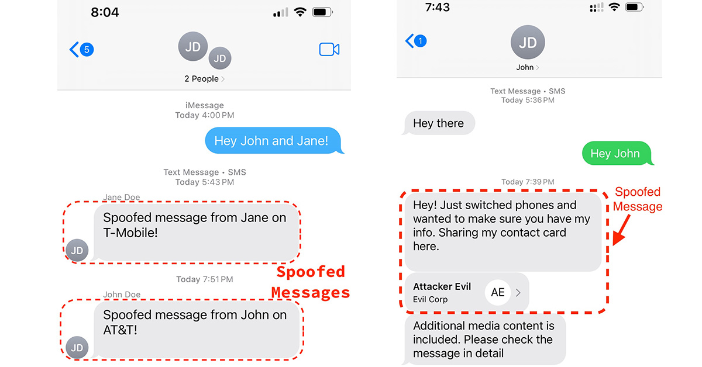
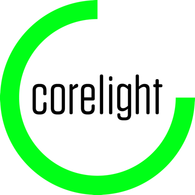

I am a PhD student at the Department of Computer Science and Engineering at the University of California, San Diego. I'm fortunate to be advised by Stefan Savage and Geoff Voelker.
I study real-world cybersecurity problems through empirical measurement. My recent work has looked at ransomware affecting hospitals, large-scale email abuse, automotive security, and other threats to critical infrastructure. I'm a member of the Sysnet and CryptoSec research groups at UC San Diego. My hometown is Bangalore (ಬೆಂಗಳೂರು), India.





- 2026. CSE Doctoral Award for Excellence in Service and
Leadership, UC San Diego.
- 2026.
Distinguished Paper Award, IEEE Symposium on Security
and Privacy (Oakland) - News
- 2024. Finalists, NatSec Hackathon
(Stanford DEFCON and Shield Capital)
- 2021-2022. Receipent of
JN Tata
Scholarship.
- Program Committee, Research in
Attacks, Intrusions and Defenses (RAID) 2026
- CSE Chezbob Coordinator, UC San Diego (2026-2027)
- CSE Visit Day Coordinator, UC San Diego (2026)
- Allyship Co-Chair, UCSD Graduate Women
in Computing (2023-2024)
- VP External, Jacobs Graduate
Student Council (JGSC) Member, UC
San Diego (2021-2023)
- Lost in
Translation: Text Message Spoofing via Email
IEEE Symposium on Security and Privacy (Oakland), May 2026
- Measuring hospital ransomware Attacks
CAIDA AIMS-5, Feb 2025
- Unfiltered: Measuring Cloud-based Email Filtering Bypasses
The Web Conference, May 2024
- Panel 6: Mobile Device Security
FTC PrivacyCon, March 2024
- Having a great GSoC as an Open Source Newbie!
Google Open Source YouTube, Nov 2022
I'm a big advocate for Open Source and have been involved in Google Summer of Code (GSoC) for a few years now. I've mentored five GSoCers (2020 (1), 2020 (2), 2021, 2024) during this time. In fact, I was myself a GSoC student in 2019 with the Zulip Open Source Project.